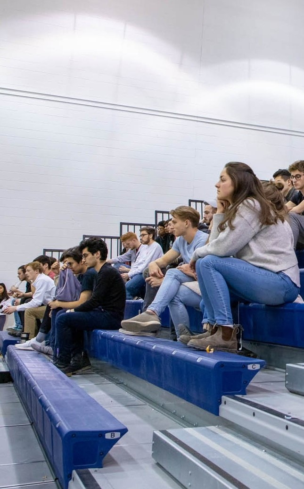

Community Involvement
QHacks
Co-Chair
- Organizing the second-largest event at Queen’s University.
- Directing a team of 25 people to host over 500 students, mentors, and speakers.
Outreach and Operations Director
- Organizing a team of five coordinators with a common goal of finding speakers and mentors.
Ontario Society of Professional Engineers (OSPE) Ambassador
- Collaborating with OSPE to host events in Kingston for engineers and individuals interested in
pursuing engineering related fields.
Girls System Sponsorship Executive
- Educating young girls about the importance of Science and Technology related fields.
- Actively finding sponsors and working towards achieving government official non-profit status.
Kiar Foundation Co-Founder
- Sending backpacks packed with school supplies to children in Northern Canada.
- Allocating resources effectively to maximize the number of students receiving supplies.